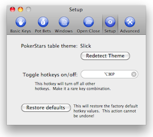

Getting started
To use BlazingStars, first make sure that your PokerStars client is open. You don't have to have any tables open, but the client has to be open or BlazingStars won't open (it'll give you an error message and shutdown). BlazingStars will install an icon in your menu bar, as pictured below.

BlazingStars will create a pop-up window to tell you that you have not selected a theme, which you will need to do before you can use most of the functionality of the program. To select a theme, open the preferences window.

Select the "Setup" tab, and pick the theme you use from the drop-down box. If you do not know what theme you're using, select View->Table Themes from the PokerStars client's menu, and look for the theme with the red checkmark; this is the theme you are using.

When using BlazingStars for the first time, you will have to set your hotkeys before you can use them; this is done on the "Basic Keys" tab. Pictured below is a sample set-up that uses non-modified keys (i.e. no Cmd, Shift, Ctrl, or Opt keys). Any modifier can be used in a hotkey combination - give it a try!
After that, you may wish to set up some pre-configured bets in the Pot Bets tab. Click the icon for Pot Bets in the toolbar, and then you can choose up to four pre-configured bet sizes as a proportion of the current potsize on the table. Pictured below is a configuration where Cmd-1 makes a quarter-pot bet, Cmd-2 makes a three-quarters pot bet, Cmd-3 makes a pot-sized bet, and Cmd-4 over-bets the pot by 50%. Thus, if the pot was $100.00, Cmd-1 would bet $25.00, Cmd-2 would bet $75.00, Cmd-3 would bet $100.00, and Cmd-4 would bet $150.00. If the "Automatically Click Bet Button" checkbox us unchecked, the bet will be entered into the bet box but you will have to click the Bet button yourself (or use one of the hotkeys you defined on the previous tab!). You can also define a hotkey to make an all-in bet on this tab.
These two tabs include most of the functions you will be using on a regular basis in BlazingStars, so close the preferences window and go play some poker! If you play in a lot of Sit-N-Gos or regular tournaments, you might want to check out the Open:Close tab as well, to handle some common annoyances of the PokerStars client.